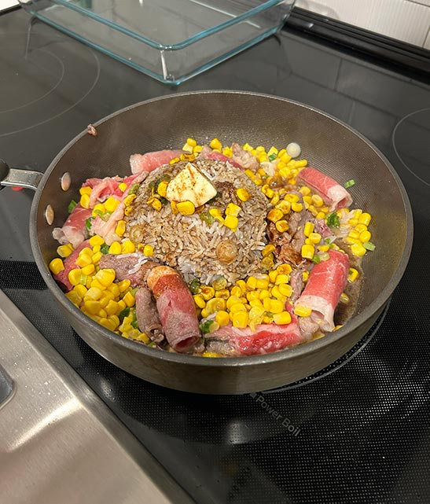

The Game Design Best UX Practices article was really interesting to me and brought up a lot of points that I had never considered before. For example, in the section discussing UI positions, I thought it was really interesting that there are easy-to-reach and hard-to-reach zones that are considered and that many elements that lead to monetization are placed in the easy-to-reach zones. Of course, after the fact, it makes a lot of sense, but before reading this article, it wasn’t something that I had thought about.
I also thought it was really interesting that most users are right handed and so a lot of these games are designed with that in mind. For example, buttons or decisions that are considered good for the game are placed on the right since that’s an easy-to-reach place and users are more likely to subconsciously click on them and as a designer, you’d want them to proceed in your game rather than lose their data or exit out.
Another thing that I thought was interesting was that you’re able to place invisible skip buttons on the screen when it comes to intro videos. This is also something that I hadn’t thought about previously, but it makes a lot of sense when I think about my own experience with mobile games or just apps in general. Usually when I want to skip through content faster, I’m inclined to just tap my phone screen to help speed up the process.
visual thinking analysis

nguyen, katelyn 2023
This image is interesting because unless you’ve had this meal before, it can be difficult to tell what exactly it is. It’s commonly referred to as pepper lunch since that’s the name of the popular chain restaurant originating from Japan. It features teppanyaki, which is a Japanese style of cooking food on an iron griddle. I think this image is visually interesting because of the different colors of the ingredients. While it’s difficult to see the steam, I think being able to see how some pieces of meat are cooked more than others gives the image some dimension. I think it really brings it to life and allows you to notice that this images was taken during the process of making a meal, which makes it feel a lot more personal.
For my every picture! assignment, I went back and forth a lot on what exactly I wanted to focus my project on. At first I wanted to do a collection of my concert photos to document what concerts I’ve gone to so far. I think this would’ve been a really fun idea, but a lot of my images were dark and looked very similar so I decided to choose something else. After browsing my photos, I decided that a good way to document my college years was through food and the meals that I’ve made so far. The image selected is one of the very first meals I made this year after moving into a new apartment and being able to have a collection of all my food pictures will be something really fun for me to look back on in the future.
I think food can say a lot about someone’s interests, which is what I think this photo collection will be for me. From my images and ratings of each meal, people may be able to tell what kinds of cuisines I gravitate towards and it may even inspire them to try out a recipe for themselves! I think this will also be great for me to look back on to gain some inspiration for myself if I’m looking for dinner ideas one day. Recreating these meals may spark feelings of nostalgia for me and may bring back really good memories in the future.
visual literacy and thinking analysis
The website I chose to analyze is Casa di Solare. At first I was confused about what the purpose of the site was but as I continued to scroll through, the message became more clear and I could definitely see how the imagery helped to support that. The main purpose of the site is to promote and sell the display typeface Solare designed by Nikolas Wrobel.
The website utilizes a lot of very cool transitions and also incorporates videos really well into the site. I also really liked how many aspects of the website were triggered by hovering over the elements. The landing page features a giant orb that can track and display the movement of your cursor when hovering over that. I think this feature is super cool and I’m super interested to see how they were able to achieve that effect. As you continue scrolling, the header “Solare” comes into frame, and again when you move your cursor into different sections of the page, the website pans slightly in that direction which I think is a very nice touch. It makes me feel like I’m in a globe or orb myself and I’m able to lean in all directions to be able to get a better view of my surroundings
Another page that I really liked and found to be very engaging is the page that includes the alphabet formatted in encased circles. As you scroll, you begin to zoom closer into the center of the circle and the movement of the text and circles mimics the motion of what I imagine a camera lens would be like when you’re trying to focus on a specific object. In this case, it represents focusing more on the typeface and looking deeper to find more information. The final page that I thought was extremely clever and intriguing was the page that reads “The Story of Solare” which features a collection of characters from the typeface, but when you hover over them, it displays the skeleton of the type and how exactly the shapes were achieved as it reveals all the anchor points and the positions of each one. This is an effect I have yet to see and I think it was really a really clever and smart decision.
overlays design anaylsis
The articles on overlays and modal windows were really interesting to read and it definitely wasn’t what I was expecting. The Overuse of Overlays: How to Avoid Misusing Lightboxes article heavily emphasized that overlays should be used minimally and after lots of thought and consideration. The article mentioned that just because you can use overlays doesn’t necessarily mean that you should. Three key elements that should be included if and when using overlays is that there should always be a distinct close button whether it’s labeled “close” or the symbol “x” is used. It should also be very clear that there is an active overlay; therefore, a lightbox or shadow should be used to show it’s different from the background or parent page. This is especially important for accessibility, but there should be controls for keyboard users to open and close the overlay.
The article also made it clear that oftentimes, overlays tend to make users lives harder since they’re so tricky to work with and their designs often break. Titles and labels should make it very clear what the purpose of the overlay is and should not make it difficult for users to interact with the content. I noticed that in my everyday life, overlays are often used for ads, trying to get you to subscribe to a company’s newsletter in order to get a discount on their purchase. After thinking about it, I do find them very annoying especially when they appear out of nowhere. I noticed that some have hidden close buttons which makes it very difficult to navigate, especially when I don’t want to sign up for something. Just the other day in class, our lesson on overlays was really interesting to me and I thought that it was a pretty cool function. However, after reading the articles and reflecting on my own experiences with overlays, I’ll most definitely reconsider my decision if I ever choose to incorporate overlays into my design.
form design analysis
The "Best practices for form design" article brought up some really good points that I didn’t think about before. One thing that was consistent with other UI/UX tips is to not overload your user with too much information. Therefore, it’s key to make sure your form is only asking for essential information otherwise users lose interest and are no longer committed to completing the form. The tip about using a one column layout was also really interesting to me. The author wrote that maintaining the vertical flow is important to keep the momentum going. This made me realize that sometimes having to scroll more in order to access all the information is better than it all being crammed into one page. This also made me think about the layout of my MadLibs 2.0 project. I originally had all my prompts fit the screen size; however, it was in a two column layout. After reading this article, I think I’ll go back to revise the layout for my project to ensure that my users don’t get lose interest when it comes to filling out my form.
Another tip I thought was interesting was to not use inline labels, which is where labels are placed within an input field. The reason for this is that once the user inputs information, the labels disappear and that makes it difficult for users to be sure they’re filling out eat field with the proper information. This is also another design flaw that I made in my MadLibs 2.0 project. In my input fields, I originally wanted to include inline labels; however, I think I’ll be rethinking that design choice in order to make my design easier for readers to understand.
I also really liked how the article stressed the importance of showing users their progress within the form or just where they are by highlighting the field that they’re currently working on. Reading this made a lot of sense to me and it made me think about my own experience with using forms. I realized that I really enjoy when a form includes some sort of progress bar to show me how much of the form I’ve completed and how much more I have to figure out. I also think it’s really helpful when I’m able to quickly notice which field I’m filling out by the outline being highlighted. This is especially useful incase I take a break from filling the form out or if I get distracted midway through. This is something that I’d like to implement in my MadLibs 2.0 project as well.
One website that includes these practices for form design is Sephora. When checking out, form is broken down into different sections including: shipping address, shipping, gift message, and payment method. The section that you’re currently working on is expanded and the text is bold. The input field that you’re working on is also highlighted and the mandatory fields are marked with asterisks. The size of the text fields also correlate to the amount of information that should be inputted in each field.